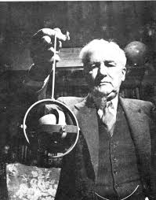
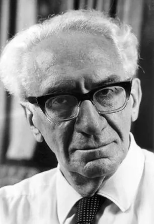
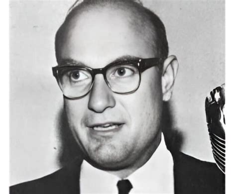
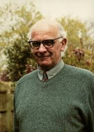
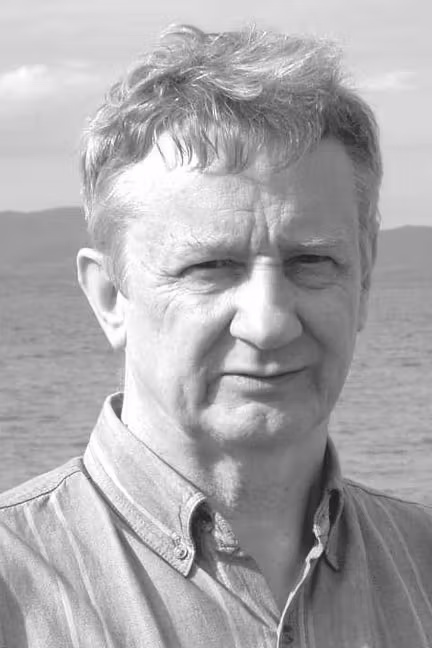

Modern/Alternative Catastrophists Pt. 1
Article researched and written by the author of this website, Tyler V. (BraveCat)
Posted Apr. 1st, 2026
Overarching Insight
The period of figures discussed below helped drive scientific bias away from normally accepted science and test the waters into new frontiers. Some like Velikovsky did this through fantastical books and mythical methods, while others like Napier and Clude revolved more strictly around peer reviewed scientific publications. This was a catastrophist renaissance period that built on previous works and historical events to propose new ideas and insights that were not conceived of before. Although much of it is proposed as controversial, there has been repeated scientific merit and periodical vindication for some of the theories explored. Other theories have simply evolved since then, proving that open discussion and different perspectives are vital for science to actually be progressive and reputable.
Figures From Late 1800's Into 2000's
Hugh Auchincloss Brown (1879–1975)

Role: American electrical engineer; self-funded researcher; author of Cataclysms of the Earth (1967).
Brown was one of the earliest modern proponents of rapid pole shift theory as a mechanism for recurring catastrophes.
Core Theory
Brown proposed that the growth of asymmetric polar ice caps causes the Earth's crust (or the entire planet) to become gravitationally unstable. When the ice mass at one pole becomes sufficiently large, the resulting centrifugal imbalance causes the Earth to "roll" or "tumble", shifting the poles to new positions. This crustal slippage occurs rapidly over a period of hours to days causing:
Mega-tsunamis thousands of feet high sweeping across continents.
Instant climate shifts as formerly polar regions move to temperate or tropical latitudes and vice versa.
Mass extinctions of organisms unable to survive the sudden environmental change.
Rapid burial of organisms under flood sediments or ice, explaining preserved mammoths.
Key Details and Evidence Cited
Flash-frozen mammoths: Brown placed great emphasis on the preserved mammoths found in Siberian permafrost, some reportedly with undigested food in their stomachs (buttercups and other vegetation). He argued these animals were living in a temperate climate when a sudden pole shift flash-froze them, preserving their bodies and stomach contents.
Coal and fossil distributions: The presence of tropical plant fossils (including coal deposits) at high latitudes was, for Brown, evidence that these regions were once tropical and were shifted to their current polar positions by crustal slippage.
Geological anomalies: Brown cited various geological features such as misplaced boulders, unusual sediment distributions, and evidence of sudden flooding being consistent with catastrophic pole shifts.
Cyclical periodicity: Brown suggested these pole shifts occur roughly every few thousand years, though he was less specific about periodicity than some later theorists.
Scientific Assessment
While Hugh was on the right track with frozen mammoths and geological anomalies, the purely driven mechanism he proposed was not great enough for scientific evidence of catastrophism. Brown's mechanism involving ice-cap-driven planetary tumbling has been quantitatively refuted. The mass of polar ice caps, while enormous by human standards, is negligible compared to the Earth's total mass. The forces needed for such a displacement requires larger mechanisms which have been rigorously researched by several other figures covered in this set of articles.
Immanuel Velikovsky (1895–1979)

Role: Russian-American independent scholar; physician by training; author of Worlds in Collision (1950), Ages in Chaos (1952), Earth in Upheaval (1955), and other works.
Velikovsky is perhaps the most controversial and culturally significant figure in 20th-century catastrophism. His work provoked one of the most extraordinary scientific controversies of the modern era. Not merely a debate about evidence, but a battle over the sociology of science itself.
Core Theory — Planetary Catastrophism
Velikovsky proposed that within recorded human history (roughly 3,500 to 687 BCE) the solar system underwent a series of near-catastrophic planetary encounters that directly impacted Earth and are recorded in the mythologies, religious texts, and historical records of virtually every ancient civilization.
In his book Worlds In Collision he proposed that Venus was actually ejected out of Jupiter, and had several close paths with Earth that caused many of the events described from religions and mythos recorded from the Bronze Age collapse. He argued the orbits later stabilized due to electromagnetic forces in the solar system.
The Mythological Method
Velikovsky's central methodological innovation was using cross-cultural mythology as historical record. He argued that myths about planetary gods, cosmic battles (e.g., the Babylonian Enuma Elish, the Greek battle between Zeus and Typhon, the Hindu Vedic cosmic conflicts, Egyptian myths about Set and Horus) were not fantasies but eyewitness accounts of actual astronomical events, preserved in symbolic/religious form by traumatized survivors.
He compiled strikingly similar catastrophe narratives from cultures with no known contact such as global floods, the Sun stopping in the sky, a period of darkness, fire raining from heaven, seas parting, mountains collapsing, etc and argued this convergence proved a shared historical event rather than independent mythological invention.
Controversy and Significance
Worlds in Collision was published by Macmillan in April 1950 and was an immediate bestseller, reaching #1 on the New York Times bestseller list. The public reception was sensational. The scientific establishment's reaction was equally sensational, and unprecedented in its organized hostility. Before the book was even published, based on prepublication excerpts, leading astronomers including Harlow Shapley (director of the Harvard Observatory) and Cecilia Payne-Gaposchkin organized a campaign against it. They threatened Macmillan, which also published scientific textbooks, with a boycott unless it dropped the book. Macmillan, under this pressure, transferred the publication rights to Doubleday within weeks of the book's release. This act of scientific censorship was widely noted and became one of the most controversial episodes in 20th-century science publishing.
The campaign against Velikovsky was documented by Alfred de Grazia in The Velikovsky Affair (1966), which argued that the scientific community had violated its own norms of open inquiry in its treatment of Velikovsky. Carl Sagan, who became Velikovsky's most rigorous scientific critic, nonetheless acknowledged that the treatment of Velikovsky had been shameful in its procedural violations.
Scientific Objections and Predictions
Jupiter cannot eject a planet-sized body: No known mechanism could cause Jupiter to eject an object the size of Venus. Jupiter's gravity would capture or destroy such an object, not eject it in the manner described.
Venus's surface temperature: Velikovsky predicted Venus would be very hot (correct!) and argued this was residual heat from its turbulent recent history. However, Venus's surface temperature (~465°C) is explained by its runaway greenhouse effect which is a purely atmospheric process that requires no recent cometary origin. Velikovsky scored a correct prediction but for the wrong reason.
Earth's rotation cannot be stopped and restarted: The energy required to stop Earth's rotation would be sufficient to vaporize the oceans. Even if it could be done, restarting rotation in the same direction would require an equal but opposite impulse. The geological record shows no evidence of the catastrophic melting that would result.
Electromagnetic forces are far too weak: Velikovsky invoked electromagnetic interactions between planets as key mechanisms, but electromagnetic forces on the scale required are many orders of magnitude weaker than gravitational forces at planetary distances.
Despite the fatal problems with his specific scenario, Velikovsky made several claims that were later vindicated in modified form. Venus is indeed hot which he predicted before Mariner 2 confirmed it in 1962. Jupiter emits radio waves which Velikovsky predicted before it was confirmed in 1955. The interplanetary medium is not empty as he predicted complex electromagnetic phenomena in space; the solar wind and magnetospheres confirmed a more complex interplanetary environment than previously thought. The Moon has been electromagnetically active which He argued for ancient intense magnetic activity; later studies showed the Moon had a stronger magnetic field in the past.
Legacy and Influence
Velikovsky profoundly influenced the development of alternative catastrophism. His methods of cross-cultural mythological analysis, interpretation of ancient texts as catastrophe records, and radical revision of conventional chronology became templates for many subsequent alternative researchers. He inspired plasma cosmology researchers (notably Hannes Alfvén and Anthony Peratt) who took seriously his emphasis on electromagnetic phenomena in astrophysics.
His work directly inspired many figures on the alternative list, including Victor Clube, Bill Napier, and others who attempted to rescue the core insight (that ancient catastrophes shaped human history and mythology) while replacing the physically impossible planetary encounters with more plausible mechanisms (comet/asteroid impacts). The Velikovsky Affair had lasting significance for the philosophy of science. It raised genuine questions about how the scientific establishment handles unorthodox ideas, whether the organized suppression of Worlds in Collision represented legitimate quality control or the defense of academic orthodoxy through illegitimate means.
Chan Thomas (1920–1998)

Role: American author, described variously as a defense contractor researcher and intelligence community figure; author of The Adam and Eve Story: The History of Cataclysms (originally published 1963, with a version classified by the CIA and later declassified in 2013, a sanitized version with multiple chapters removed).
Chan Thomas is a relatively obscure figure whose significance has grown enormously in alternative catastrophist communities since the CIA declassification of a version of his book in 2013 via FOIA request.
Core Theory
Thomas proposed that the Earth undergoes periodic catastrophic resets driven by a combination of magnetic pole reversals, crustal displacement, mega-tsunamis and atmospheric catastrophe. The geomagnetic field periodically undergoes rapid reversal, not the slow reversal recognized by mainstream geology (which takes thousands of years), but a near-instantaneous flip occurring within hours to days. The magnetic reversal destabilizes the Earth's crust, causing rapid displacement. The crust slips suddenly over the mantle, shifting all landmasses relative to the poles. The crustal slip generates tsunamis thousands of feet high traveling at hundreds of miles per hour across continents. Supersonic winds as the atmosphere continues rotating while the crust momentarily decelerates. Global fires from atmospheric heating and sudden burial of millions of organisms under flood sediments.
Periodicity of ~6,500 years
Thomas argued these events occur at roughly 6,500-year intervals with one cycle having occurred approximately 11,500 years ago (end of the last ice age) and a previous one ~6,500 years before that. Survivor narratives in ancient texts also plays a part in this theory. Like Velikovsky, Thomas argued that global flood myths, including those in Genesis, the Epic of Gilgamesh, and Hindu texts, are records of these catastrophic events with survivors being the "Adam and Eve" figures who repopulated the world afterward.
The CIA Classification Issue
The CIA's classification of Thomas's book (and the subsequent release of a sanitized version with entire chapters removed) has become a major talking point in alternative catastrophist communities. The released version has sections clearly removed, the published page count does not match the declassified document's pagination. This has been interpreted by many as evidence that the CIA considers the information genuinely threatening (i.e., they know the catastrophe is coming and are suppressing public knowledge)
The mainstream interpretation is more prosaic. the CIA collected many publications during the Cold War (particularly anything mentioning electromagnetic or geological disruption that might have defense implications), and classification does not necessarily imply belief in or validation of the content. Many of the mechanisms Chan discussed are feasible however lean to the extreme side compared to more rigorous research that has been discussed since then.
Evidence and Arguments Used
Mammoth preservation: Like Brown, Thomas cited flash-frozen mammoths as evidence of sudden atmospheric and thermal changes consistent with crustal displacement.
Geological unconformities: Sharp breaks in stratigraphic records interpreted as evidence of sudden global upheaval.
Universal flood myths: Cross-cultural analysis of catastrophe narratives.
Ancient calendar systems: Thomas argued various ancient calendrical systems encoded knowledge of the ~6,500-year cycle.
Magnetic anomalies: Patterns in the paleomagnetic record interpreted as evidence of rapid reversals.
Catastrophist Relevance
Although the extremes of the theory present evidential problems like Charles Hapgood, the refinement of these theories by later figures prove to be more feasible than initially thought. The Adam and Eve framing that; catastrophe destroys civilization --> a small remnant survives --> humanity rebuilds, has become archetypal in alternative catastrophism and recent archeological discoveries. His combination of magnetic reversal + crustal displacement represents a specific mechanistic proposal that later researchers have attempted to refine with modern geophysical data. His CIA declassification narrative has given him enormous traction in conspiracy-adjacent alternative communities, where official suppression is interpreted as implicit validation, albeit with some additional pieces to put together. His 6,500-year periodicity has been adopted by Ben Davidson and others in the Suspicious0bservers community as a framework for solar micronova cycles and the discovery of the galactic current sheet models.
Victor Clube (1934–)

Role: British astronomer; former Dean of the Astrophysics Department at Oxford University; co-author (with Bill Napier) of The Cosmic Serpent (1982) and The Cosmic Winter (1990).
Clube is one of the most scientifically credentialed figures in the alternative/fringe catastrophism space. His work on cometary catastrophism is grounded in real astronomy and has had genuine (if contested) influence on mainstream impact research.
Core Theory — Coherent Catastrophism
Clube and Napier (see below) developed what they called "coherent catastrophism" which is the idea that the Earth has been periodically bombarded by debris from the disintegration of a giant comet that entered the inner solar system within the past ~100,000 years.
The Giant Comet Hypothesis:
A giant comet (perhaps 100 km or more in diameter, far larger than typical comets) entered the inner solar system and was captured into a relatively short-period orbit by Jupiter's gravity. Over time, this giant comet fragmented and disintegrated, producing Multiple comet nuclei (explaining the families of comets with similar orbits). An enormous stream of debris such as dust, boulders, and ice spread along the orbital path. It also produced the Taurid meteor stream (the most prominent annual meteor shower, visible in October/November) which Earth periodically crosses this debris stream at two points in its orbit, receiving enhanced bombardment from cometary fragments and dust.
During periods when Earth's orbit intersects the densest parts of the debris stream, bombardment episodes last centuries to millennia, causing several things. Climate disruption from dust loading of the atmosphere, direct impacts from comet fragments, and enhanced airburst events (large fragments exploding in the atmosphere without leaving craters). Additionally causing agricultural failures, social collapse, and civilizational disruptions at large.
Comet Encke and the Taurid Complex:
The Taurid meteoroid stream is the observational anchor for Clube and Napier's hypothesis. They argued that comet Encke (with a period of ~3.3 years) is a surviving fragment of the giant progenitor comet. The Taurid stream contains numerous undiscovered large objects, potentially Apollo-class asteroids, that could cause devastating impacts. The Beta Taurid daytime meteor shower (occurring in late June/July) corresponds to the other crossing of the Taurid stream and has been associated with major impact events, including the Tunguska event of 1908 (which occurred on June 30 during peak Beta Taurid activity).
Historical Catastrophes and Mythology
Like Velikovsky before them, Clube and Napier drew on ancient mythology and historical records as evidence for past catastrophic encounters. The dragon mythology found across virtually all ancient cultures (serpent deities, fire-breathing monsters in the sky) was interpreted as records of cometary apparitions during close approaches or bombardment events. These events include Chinese historical records of unusual astronomical phenomena, Roman and Greek accounts of disasters attributed to comets and celestial disturbances, and Vedic and Mesopotamian cosmic narratives. Clube's work The Cosmic Serpent specifically focused on identifying cometary motifs in ancient mythology as evidence for historical encounters with the giant progenitor comet.
The ~500-year Cycle:
Clube and Napier identified what they believed were recurring ~500-year cycles of enhanced cometary bombardment, corresponding to Earth's periodic intersection with the densest clumps of debris in the Taurid stream. They argued that major historical civilizational disruptions as seen in the Bronze Age Collapse (~1200 BCE), the Dark Ages (~400–800 CE), and other periods corresponded to these bombardment episodes.
Key Details and Significance
Unlike most figures on this list, Clube and Napier published extensively in peer-reviewed astronomical journals. Their papers on the Taurid complex appeared in Monthly Notices of the Royal Astronomical Society and other respected journals. Their giant comet hypothesis was taken seriously enough to prompt significant follow-up research. David Asher (Armagh Observatory) collaborated with Napier on detailed orbital modeling of the Taurid complex, identifying multiple large objects within the stream.
Empirical Support:
The Taurid meteoroid stream is real and well-documented. It is among the broadest and most diffuse meteor streams, consistent with ancient origin and extensive fragmentation. Multiple near-Earth objects have been identified within the Taurid complex with orbits similar to Comet Encke. The Tunguska event (1908) recorded the largest documented impact in modern times which occurred during peak Taurid activity and is widely thought to have been a cometary fragment or asteroid, consistent with Clube-Napier predictions. A 2019 paper by Napier et al. in Monthly Notices of the RAS updated the giant comet hypothesis with modern observational data, finding continued support.
Younger Dryas Connection:
Clube and Napier's framework has been cited in support of the Younger Dryas Impact Hypothesis (discussed under Graham Hancock and Randall Carlson later). The idea that a major bombardment episode occurred ~12,800 years ago, contributing to the Younger Dryas cooling and the extinction of megafauna, is consistent with enhanced Taurid stream activity during that period.
Critique:
The giant progenitor comet hypothesis, while plausible, remains unproven. No single giant comet has been definitively identified as the source. The mythological evidence is contested. Interpreting dragon myths as cometary records involves some subjective interpretation, albeit with many coincidental lines of observation. The claimed 500-year cycles in historical catastrophe are difficult to verify rigorously, as historical records are incomplete and the relationship between astronomical cycles and civilizational collapse is complex.
Catastrophist Relevance
Clube and Napier represent the scientific fringe at its most credible, researchers with genuine expertise and institutional credentials who have developed a specific, testable catastrophist hypothesis grounded in real astronomy. Their work connects mainstream asteroid/comet impact science to the broader alternative catastrophist narrative about civilizational destruction, providing the latter with a legitimate scientific framework. Their hypothesis that civilizational disruptions may be linked to cometary bombardment cycles has been influential in fields ranging from archaeology to climate science, and has gained renewed attention in the context of the Younger Dryas impact debate.
William K. Hartmann (1939–)
Role: American planetary scientist, artist, and author; senior scientist at the Planetary Science Institute in Tucson, Arizona; co-developer of the Giant Impact Hypothesis for the Moon's formation.
Core Theory — The Giant Impact (Theia Hypothesis)
In 1975, Hartmann and Donald Davis published a landmark paper in Icarus proposing that the Moon formed from the debris ejected by a giant impact between the early Earth and a Mars-sized protoplanet (now called Theia) approximately 4.5 billion years ago. In the early solar system (~50–100 million years after the solar system's formation), a Mars-sized body known as Theia was growing in an orbit similar to Earth's, at one of Earth's Lagrange points. Gravitational perturbations destabilized Theia's orbit, causing it to collide with the proto-Earth in a glancing blow at a relative velocity of a few kilometers per second.
The impact was catastrophic on a planetary scale where Theia was vaporized and absorbed into the Earth. An enormous quantity of mantle material from both bodies was ejected into orbit around Earth as a cloud of vapor and debris which supposedly formed the moon in just ~1,000 to ~10,000 years after. The impact also remelted the Earth's mantle, reset the geological clock, and may have contributed to Earth's current rapid rotation and axial tilt.
Refinements and Complications
The original Hartmann-Davis hypothesis predicted the Moon should be enriched in material from Theia's mantle. However, precise measurements of isotope ratios (particularly tungsten-182, which is sensitive to timing of core formation) show the Moon's composition is almost indistinguishable from Earth's mantle. It's more similar than expected if Theia were a distinct body. This has prompted revised models, including proposals that Theia was compositionally identical to Earth (having formed in the same orbital zone), or that the impact involved a faster-spinning Earth and more head-on collision than originally modeled (the "Fast Spin" hypothesis of Cuk and Stewart, 2012), or even a multiple-impact scenario.
Broader Context in Catastrophism
While Hartmann is not typically considered an "alternative" catastrophist, his work is deeply relevant to the catastrophist worldview. He demonstrated that planet-scale impacts are real and have had defining consequences for Earth's history. the Moon's formation being a catastrophe so enormous it effectively remelted the entire Earth. The Late Heavy Bombardment (~3.9 billion years ago), in which the inner solar system (including Earth) was subjected to intense asteroid and comet bombardment, was a catastrophic episode that sterilized or nearly sterilized the early Earth, a theme Hartmann has researched extensively
Bill Napier (1940–)

Role: British astronomer; former professor at the University of Buckinghamshire; long-time collaborator with Victor Clube at the Armagh Observatory, Northern Ireland.
Napier's work overlaps extensively with Clube's (discussed above), so this section focuses on his independent contributions and later work.
Napier's Independent Contributions
Napier has also explored connections between the solar system's galactic orbit and periodic comet showers:
1. Quantitative Orbital Modeling of the Taurid Complex
Napier has done the most detailed computational work on the orbital dynamics of the Taurid complex, including the following:
Tracking the orbital evolution of known Taurid objects backward in time to determine the age and size of the progenitor.
Identifying clusters of near-Earth objects (NEOs) with Taurid-like orbits that represent surviving fragments of the original giant comet.
Estimating the impact hazard from undetected Taurid objects, which he argues is substantially higher than current NEO surveys suggest.
2. Galactic Cycle Connections
Napier has also explored connections between the solar system's galactic orbit and periodic comet showers:
As the solar system oscillates above and below the galactic plane (with a period of ~30–35 million years), it periodically passes through denser regions of interstellar material and molecular clouds. These passages can gravitationally perturb the Oort Cloud (the distant reservoir of comets surrounding the solar system), sending showers of comets into the inner solar system. This mechanism may explain the apparent ~26–30 million year periodicity in mass extinctions noted by Raup and Sepkoski (1984). Although many other researchers suggest extinction events happen more regularly on the geological time table through cosmic rays and geomagnetic reversals.
3. The Younger Dryas Impact Paper
In collaboration with Wickramasinghe and others, Napier published a 2010 paper in Monthly Notices of the RAS titled "Palaeolithic extinctions and the Taurid Complex". The Younger Dryas cooling event (~12,900 years ago) coincided with Earth passing through the densest part of the Taurid debris stream.
Multiple airburst events from cometary fragments could explain the Younger Dryas Boundary (YDB) layer. The YDB is a thin sedimentary layer containing elevated concentrations of impact proxies such as nanodiamonds, platinum, and spherules found at numerous sites globally.
This mechanism provides a physically plausible explanation for the Younger Dryas impact hypothesis without requiring a single large impact.
4. Panspermia
Napier has also collaborated extensively with Fred Hoyle and Chandra Wickramasinghe on panspermia. This is the hypothesis that life exists throughout the cosmos and was seeded on Earth by cometary delivery. This work is highly controversial but represents another dimension of his interest in comets as agents of profound change which are biological rather than catastrophic in this case.
Catastrophist Relevance
Napier's significance lies in providing quantitative astronomical grounding for the comet-impact catastrophism framework. His orbital models are taken seriously by mainstream asteroid researchers, and his work on the Taurid complex has influenced NASA and ESA assessments of the long-period impact hazard. By publishing in peer-reviewed journals and engaging with mainstream astronomical data, Napier helps bridge the gap between fringe catastrophism and legitimate planetary science.
Conclusive Statements For Part 4
Throughout the figures listed we see many novel and rigorously tested theories, some of which have posed controversy to this day. Velikovsky's mythological methods rippled new ideologies into the public-scientific sphere that has lived on and evolved. The collaborations between Victor Clube and Bill Napier provided many revolutionary concepts and hypotheses that broke open more foundational research in the category of rapid cyclical changes throughout Earth's history. Many scientific institutes and publications were involved at this point in history, some of which had knee jerk reactions to the material, and others abiding with peer review analysis of new founded theories. And then there's Chan Thomas, seemingly a total anomaly of the system working for the CIA and publishing a catastrophism book that goes beyond what anyone dared to think possible. His work gets exposed, critiqued and scientifically refined by Ben Davidson as discussed in the final part to this historical saga of living myths and modern legends.